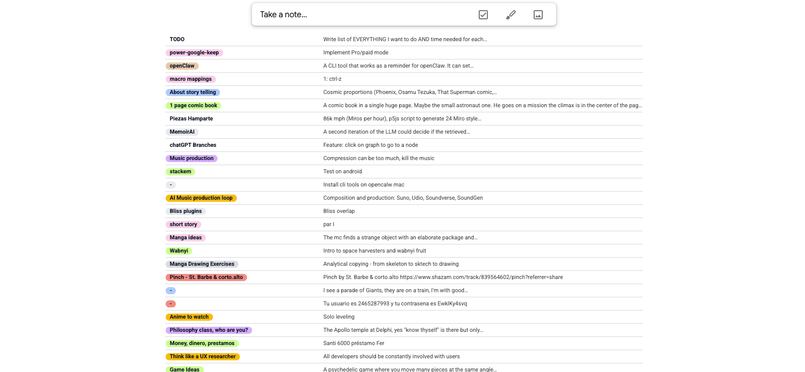
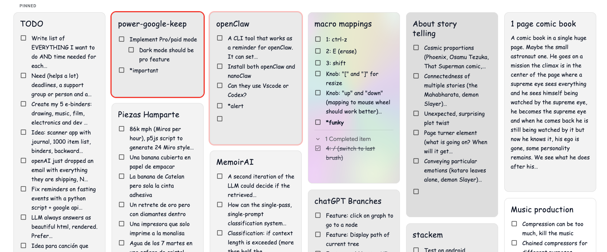
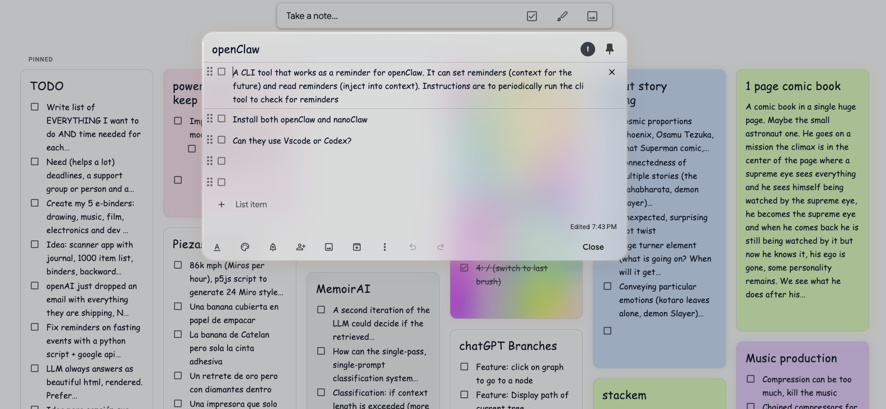
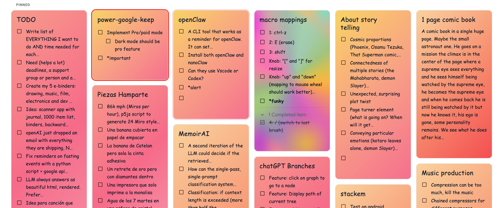
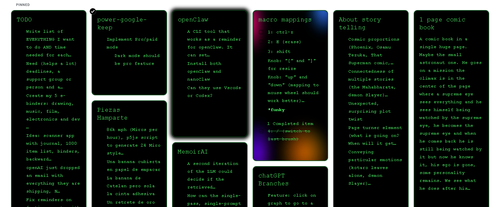
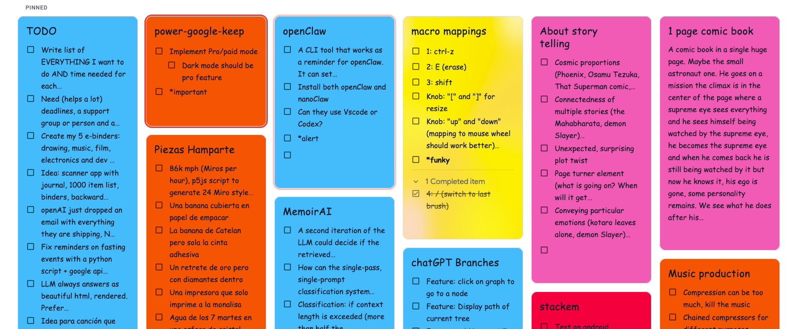
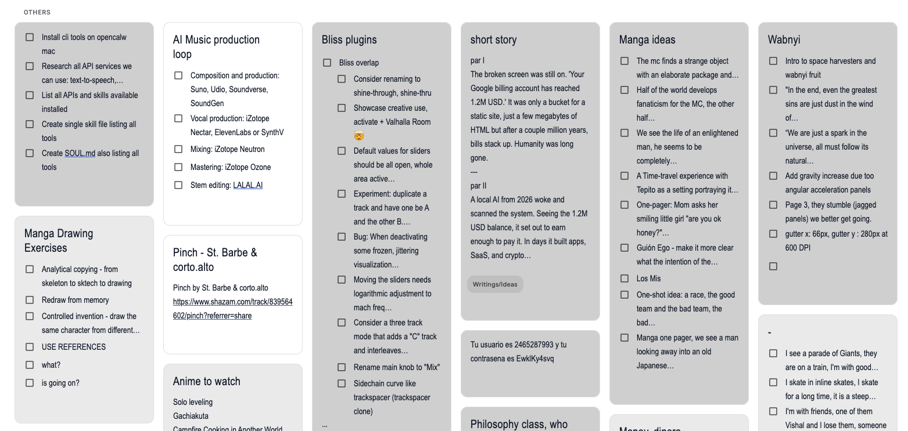
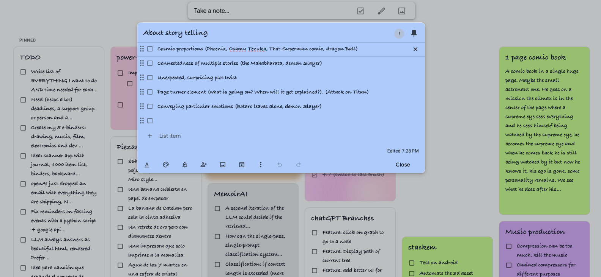

Stable
Each note keeps its own color identity instead of reshuffling every refresh.

Keep It Colorful
Chrome extension for Google Keep
Google Keep, but easier on the eyes
Keep It Colorful turns Google Keep into a bright, organized workspace with stable note colors, polished themes, expressive typography, and premium touches that make important ideas impossible to miss.
Stable
Each note keeps its own color identity instead of reshuffling every refresh.
Fast
Auto-colors new notes instantly so your workspace stays readable by default.
Flexible
Themes, fonts, layouts, glow effects, and premium styling when you want more control.
Section 1 demo
Show the extension working in a real Keep board. That visual sells the value faster than any feature list.
Why it clicks
Color is not decoration here. It becomes structure. Notes feel grouped, priorities jump out, and the entire board becomes easier to read in seconds.
Automatic coloring
Turn on auto-coloring and your Keep board stops looking unfinished the moment you create something new.
Stable mapping
Stable per-note color mapping helps you remember where things are without relying on titles alone.
Keyword effects
Use keywords for bold styles, gradients, specialty fonts, or stronger visual emphasis where it matters.
Layout and focus
Switch between compact or list layouts, focus mode, and typography options that feel less default and more yours.
Different grids including simple lists
Keep It Colorful does not lock you into one rigid board. Use denser grids when you are scanning a lot, then move into simple list mode when you want less noise and clearer reading flow.
Compact grids help you compare more notes at once without giving up color cues.
List and simple list modes stretch notes into calmer rows that are easier to review line by line.
Layout becomes another filter. The same notes can feel fast, focused, or spacious depending on the task.







Different themes
Some days call for bright Google Keep energy. Others need terminal edge, black-and-white restraint, or a softer gradient wash. Themes change the emotional tone of the board without changing your workflow.
Theme packs let color, contrast, and note treatment move together as one cohesive system.
Gradient, terminal, minimal, and Keep-inspired looks make the extension feel more personal.
You can keep the playful palette or dial things down when the board needs more discipline.
Per-note alerts and emphasis
Not every note should look the same. For urgent tasks, active work, or ideas you do not want to lose, you can push a single note forward with stronger visual treatment instead of repainting the whole board.
Use alert borders and glow states to make a note feel live, urgent, or recently touched.
Switch fonts or font styles per note so reminders, creative drafts, and references each read differently.
Keyword-driven styling gives you emphasis on demand without manual visual cleanup every time.

Use a blinking edge when a note should pull your attention immediately.
Combine glow, weight, or font styling so one note feels different on purpose.
From plain to vivid
If your notes hold ideas, drafts, reminders, research, shopping lists, or project fragments, visual contrast is not a luxury. It is how you keep momentum.
Curated palettes including a Google Keep-inspired option instead of random harsh colors.
Typography and highlight options for notes that need more personality or urgency.
Premium tools for deeper customization without forcing complexity into the default experience.
Before
Everything blends together. Important notes need extra effort to find.
After
Priority, category, and mood show up at a glance without changing how Keep works.
Ready to brighten the board?